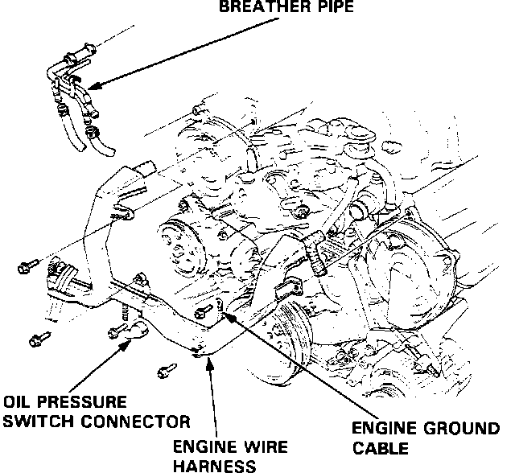
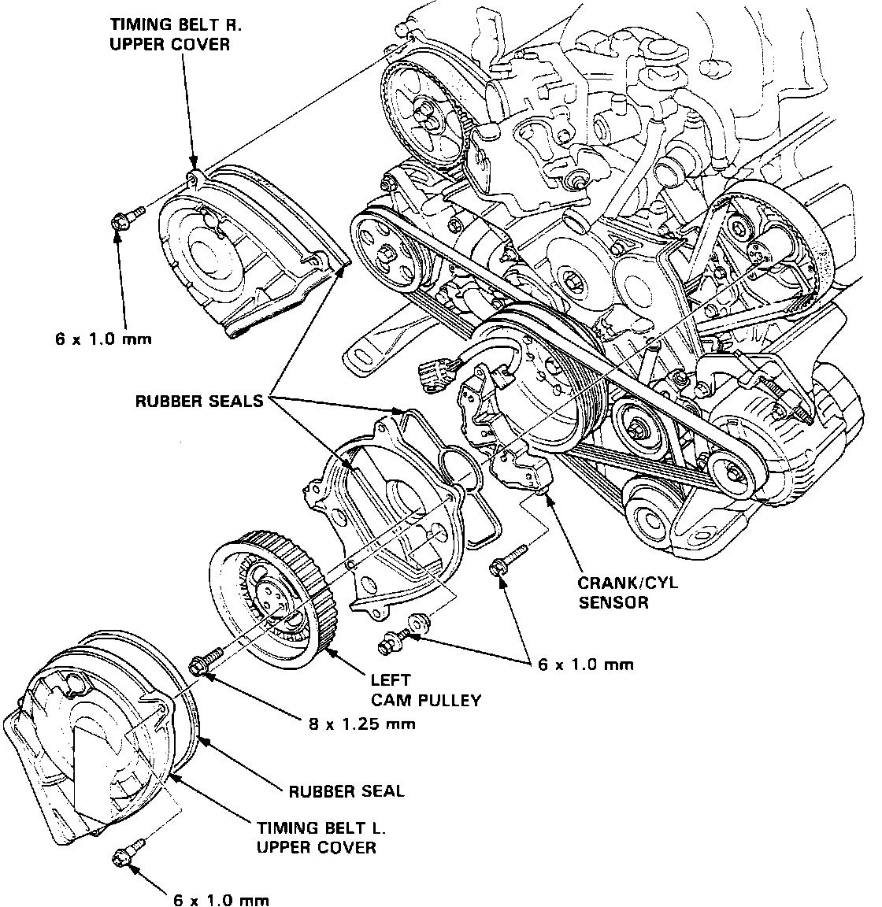

Crankshaft Position Sensor: Service and Repair
Engine Wire Harness:

Crank/cylinder Sensor Replacement:

REMOVAL
1. Disconnect the negative battery terminal from the battery.
2. Remove the engine wire harness cover and wiring harness for access.
3. Turn the crankshaft so that the No. 1 piston is at top dead center.
4. Remove the upper covers.
5. Remove timing belt from the left and right cam pulley.
6. Remove 3 pulley attaching bolts and remove left cam pulley.
7. Remove 3 back plate bolts and remove back plate.
8. Remove 2 CRANK/CYL sensor retaining bolts and remove CRANK/CYL sensor.
INSTALLATION
1. Install CRANK/CYL sensor on cylinder head.
2. Install back plate.
3. Align camshaft pulley with pin hole on camshaft.
Torque to 23 ft.lb (32 Nm)
4. Reinstall timing belt.
5. Reinstall upper timing belt cover.
6. Reinstall wiring harness and harness cover
7. Connect negative battery terminal to battery.